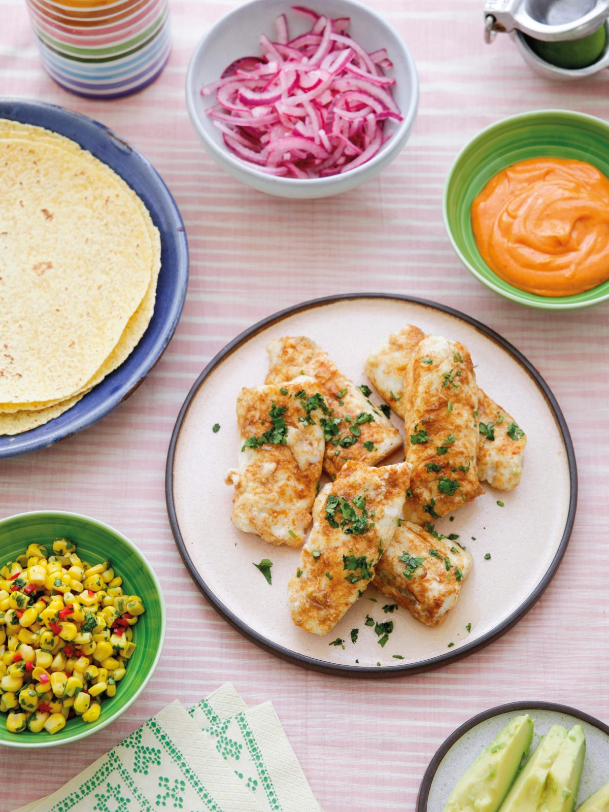

Fish Tacos
Warm soft corn tortillas piled with spiced baked fish, quick-pickled onions, fiery mayonnaise, lime-spritzed avocado and corn relish.

Before you start heat the oven to 200°C fan. The onions need at least 30 minutes in lime juice, and are better for several hours or overnight.
Ingredients
For the quick-pickled onion
For the hot sauce
For the corn relish
For the fish
For the avocado
To serve
Method
- Heat the oven to 200°C fan. Peel and halve the 1 small red onion, then slice thinly into half-moons. Put into a bowl, cover with the juice of 2 limes and stir with a fork so the onion is well coated. Leave for at least 30 minutes, or up to a day.
- Make the hot sauce by mixing the 125g mayonnaise with the 2 tsp sriracha in a small bowl. Set aside.
- For the relish, tip the 1 x 198g tin of sweetcorn into a bowl. Add the 1 red chilli — de-seed it if you do not want too much heat — along with the 3 tbsp coriander and salt to taste. Stir well and set aside.
- Cut the 4 hake fillets in half lengthways so you have long fingers, and arrange in a shallow roasting tin. Mix the 1 tsp ground cumin, ½ tsp paprika and 1 tsp flaky sea salt together and sprinkle over the fish.
- Mix the 1 garlic clove with the 2 tbsp olive oil in a small bowl. Drizzle the garlicky oil over the fish and roast at 200°C fan for 8-10 minutes, depending on the thickness of the fillets, until only just cooked through.
- Take the fish out, turn the oven off and warm the 8 soft corn tortillas in the fading heat.
- Meanwhile, peel, stone and slice the 2 ripe avocados, then spritz with the juice of 1 lime.
- Arrange the fish on a plate lined with salad leaves, sprinkle with the 1-2 tbsp coriander and take to the table with the warm tortillas.
- Put the drained pickled onions, the corn relish, the hot sauce, the sliced avocado and the 2 limes, cut into wedges on the table, so everyone can load their own tortillas.
Notes
- Fish fingers work in place of the hake fillets.
- The pickled onions, hot sauce and relish can all be made a day ahead — leave the coriander out of the relish, cover and refrigerate, then stir the coriander in just before serving.
- Red wine vinegar works in place of the lime juice for the onions.